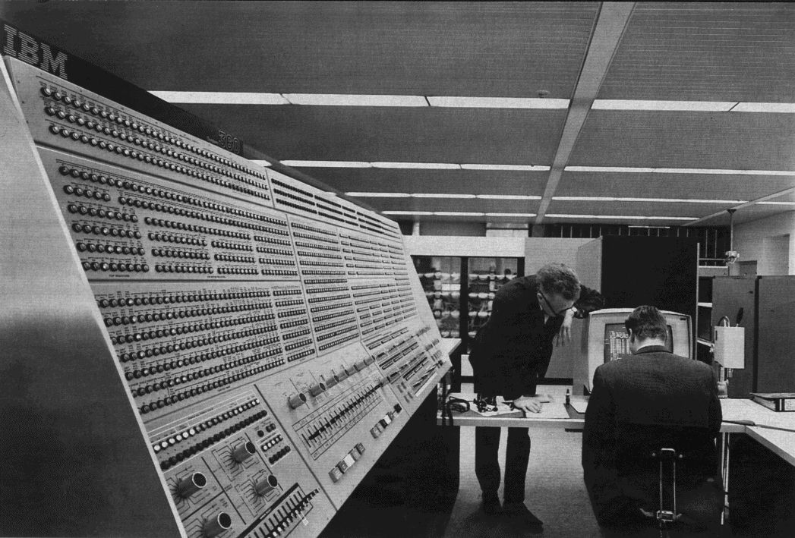

Uge 41¶
We will enter into an interesting application of continued fractions: the prime factorization of a natural number.
Prime numbers¶
A prime number is a natural number with exactly two divisors. Here is the list of the first few natural numbers with the prime numbers marked red:
$$ 1, \color{red}{2}, \color{red}{3}, 4, \color{red}{5}, 6, \color{red}{7}, 8, 9, 10, \color{red}{11}, 12, \color{red}{13}, 14, 15, 16, \color{red}{17}, 18, \color{red}{19}, 20, 21, 22, \color{red}{23}, 24, 25, 26, \dots $$
A famous method for generating the prime numbers goes under the name of the sieve of Eratosthenes. In fact there is an exceptionally beautiful proof due to Euclid that there are infinitely many prime numbers.
Attention
A fundamental fact is that every natural number $>1$ is divisible by a prime number. You can prove this by induction starting with the first few cases:
$$ 2 = 2\cdot 1, 3 = 3\cdot 1, 4 = 2\cdot 2, 5 = 5\cdot 1, 6 = 2\cdot 3. $$
Assume by induction that we have proved that every natural number $<N$ is divisible by a prime number, then we must prove that $N$ is divisible by a prime number: if $N$ is a prime number, then $N$ is divisible by a prime number i.e., $N = N \cdot 1$. If not, there exists smaller numbers $a, b$, such that $N = a b$. But by induction $a$ is divisible by a prime number $p$, say $a = p c$. Therefore $N = p (c b)$ and $N$ is divisible by the prime number $p$.
We will prove that there are infinitely many prime numbers using proof by contradiction i.e., assume that there are finitely many prime numbers and list them as
\begin{equation} \label{primes} p_1, p_2, p_3, \dots, p_n. \end{equation}
Then the natural number
$$ N = p_1 p_2 \cdots p_n + 1 $$
is divisible by a prime number. But none of the prime numbers listed in \eqref{primes} divides $N$ (why?). Therefore there must be a prime number missing from the finite list in \eqref{primes} and there has to be infinitely many prime numbers.
Methods for factoring a number¶
Ok, now we have actually proved that every natural number $N$ is a product of prime numbers, so how do we find these prime numbers? A straightforward method is to run through the ordered list of prime numbers from the beginning. If a prime number $p$ divides $N$, then continue the procedure with $N:=N/p$ from the prime number $p$ and onwards until it becomes obvious that the current prime number $p$ cannot divide e.g., if $N < p$.
This method is fine for small numbers, but for larger numbers it slows down drastically. In fact if you have a $200$ digit number $N$, which is a product of two $100$ digit prime numbers, the method above is impossible from a computational standpoint.
You can experiment in Sage with factoring numbers:
In the above experimental box, I have entered code for factoring the $n$-th Fermat number
$$ F_n = 2^{2^n} + 1 $$
for $n = 7$. These numbers have posed factoring challenges during the last several decades. Historically, the first factorization of $F_7$ used continued fractions! This is the $39$-digit number
$$ 340282366920938463463374607431768211457. $$
The old method due to Fermat¶
Recall the identity
\begin{equation} \label{factor} (x + y) (x - y) = x^2 - y ^2. \end{equation}
If we can find integers $x, y$, such that $N = x^2 - y^2$, then \eqref{factor} shows that we have a factorization of $N$. So if we define
$$ S(x) = x^2 - N, $$
we could look for a natural number $x$, such that $S(x)$ is a square number. Usually one runs through
$$ x = \lfloor \sqrt{N}\rfloor + 1, \lfloor \sqrt{N}\rfloor + 2, \dots $$
Note
What happens when you do this for $N = 2491$ (here $\lfloor\sqrt{2491}\rfloor = 49$)?
An important remark: if $N = u v$, where $u$ and $v$ are odd numbers, then
$$ N = \left(\frac{u+v}{2}\right)^2 - \left(\frac{u-v}{2}\right)^2. $$
This means that every odd composite number is the difference of two square numbers.
Attention
The greatest common divisor of two natural numbers $x, y$ is denoted $\gcd(x, y)$. It is characterized by two properties: It is a divisor in both $x$ and $y$ and if $d$ is a common divisor of $x$ and $y$, then $d$ divides $\gcd(x, y)$. From this definition it follows that $\gcd(x, y) = \gcd(y, x)$ and that $\gcd(x, 0) = x$.
A truly fundamental identity is
$$ \gcd(x, y) = \gcd(x - q y, y), $$
for $q$ a natural number. This identity is true, because $x$ and $x - q y$ have the same common divisors as $x$ and $y$. This obervation leads to the euclidean algorithm and the following result: there exists integers $\lambda, \mu$, such that
$$ \lambda x + \mu y = \gcd(x, y). $$
Again you can experiment with Sage in finding the $\gcd$ along with $\lambda$ and $\mu$. This is usually done using the extended euclidean algorithm. Try it out below and figure out exactly what the output means.
An important consequence is the following very useful result: If $a$ divides $b c$ and $\gcd(a, b) = 1$, then $a$ divides $c$. Here $a, b$ and $c$ are natural numbers.
Enter congruences and the method of Kraitchik¶
We need a small amount of number theory to proceed. Two natural numbers $a, b$ are called congruent modulo $N$ if
$$ N \mid a - b, $$
i.e., if $N$ divides their difference. This is denoted
$$ a \equiv b\pmod N $$
and the definition goes back to the the masterpiece Disquisitiones Arithmeticae by Carl Friedrich Gauss.
If instead of aiming for $N = x^2 - y^2$, we aim for $N \mid x^2 - y^2$ or
\begin{equation} \label{kraitchik} x^2 \equiv y^2\pmod N, \end{equation}
good things will happen. If
$$ N \mid x^2 - y^2 = (x + y) (x -y), $$
and $N\nmid x+y$ and $N\nmid x - y$, then $d = \gcd(N, x + y)$ is a non-trivial factor of $N$ i.e., $1 < d < N$.
Now there is a very clever method due to Kraitchik as how to systematically find $x$ and $y$ satisfying \eqref{kraitchik}: if we are given numbers $x_1, \dots, x_n$ and
\begin{align*} x_1^2&\equiv a_1\pmod N\\ &\vdots\\ x_n^2 &\equiv a_n \pmod N, \end{align*}
then
\begin{equation} \label{glue} x_1^2\cdots x_n^2 = (x_1\cdots x_n)^2\equiv a_1 \cdots a_n \pmod N. \end{equation}
If $a_1 \cdots a_n$ happens to be a square number, then this is our $y^2$ and $x^2$ is $(x_1 \cdots x_n)^2$.
A concrete example for $\sqrt{N}$¶
Let us consider the function $S(x) = x^2 - N$ for $N = 2041$. Then
$$ x^2 \equiv S(x) \pmod N. $$
For different values of $x$, we tabulate $S(x)$ along with its prime factorization with a little help from Sage:
Here is the table:
| $x$ | $S(x)$ | Prime factorization | |||
| $46$ | $75$ | $3$ | $5^2$ | ||
| $47$ | $168$ | $2^3$ | $3$ | $7$ | |
| $48$ | $263$ | $263$ | |||
| $49$ | $360$ | $2^3$ | $3^2$ | $5$ | |
| $50$ | $459$ | $3^3$ | $17$ | ||
| $51$ | $560$ | $2^4$ | $5$ | $7$ | |
Can we use this table and \eqref{glue} to find a prime factorization of $N$?
Link to continued fractions¶
Last week we saw the inequality
$$ \left| \xi - \frac{p}{q}\right| < \frac{1}{q^2}, $$
where $\xi$ is an irrational number and $p/q$ is a convergent in the continued fraction expansion for $\xi$. In other words,
$$ \frac{p}{q} = \xi + \varepsilon, $$
where $|\varepsilon| < \frac{1}{q^2}$. Applying this to $\xi = \sqrt{N}$, we get
\begin{align*} \frac{p}{q} &= \sqrt{N} + \varepsilon \implies\\ \\ \left(\frac{p}{q}\right)^2 &= N + 2 \varepsilon \sqrt{D} + \varepsilon^2 \implies\\ \\ p^2 &= N q^2 + 2 \varepsilon \sqrt{N} q^2 + \varepsilon^2 q^2\implies\\ \\ p^2 - N q^2 &= 2 \varepsilon \sqrt{N} q^2 + \varepsilon^2 q^2\leq 2 \sqrt{N} + 1 \end{align*}
Attention
So if $p/q$ is a convergent in the continued fraction expansion for $\sqrt{N}$, then
\begin{equation} \label{ineq} p^2 - N q^2 < 2 \sqrt{N} + 1. \end{equation}
An idea proposed in 1931, is to use the numerators and denominators in the continued fraction expansion for $\sqrt{N}$ as input to \eqref{glue} to try and factor $N$ i.e., if $p_n/q_n$ is the $n$-th convergent, then for $x_n := p_n$ and $a_n := p_n^2 - N q_n^2$, we have
$$ x_n^2 \equiv a_n \pmod N $$
Because of the inequality in \eqref{ineq}, $a_n$ becomes smaller than $S(x) = x^2 - N$ and therefore easier to factor into prime numbers. However crazy this idea sounds, it was a major breakthrough when the method was used to factor the seventh Fermat number by Morrison and Brillhart, September 13, 1970. This is reported in their 1975 paper A Method of Factoring and the Factorization of $F_7$ (check it out!).
Another important reference for the fascinating topic of prime factorization is Pommerance’s paper A Tale of two Sieves.
To see how far computers have come, below is a picture of the IBM 360/91 computer, that Brillhart and Morrison used to factor the seventh Fermat number.
{kind=link}